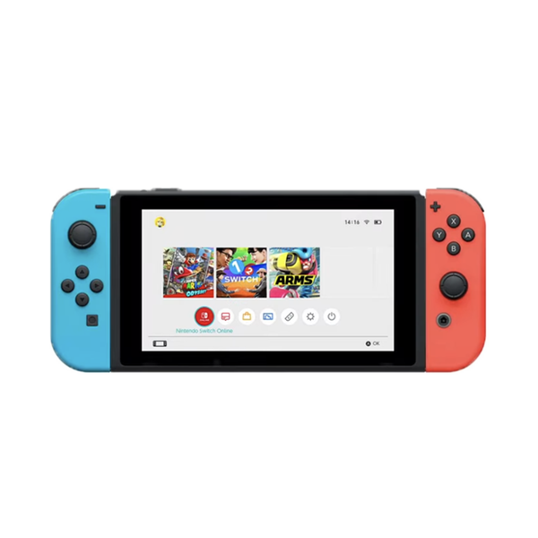

Hi! Not sure what to buy? Switch 2 vs Steam Deck
Buy Steamdeck Oled if you want a game console :)))
General Comparason:
Steam Deck Oled
Price: $549.00
Screen size: 7.4 inches 1280 x 800
Refresh Rate: Up to 90Hz
Supported Games: ANYTHING you find on Steam that is compatible with steam deck (officially over 19,000 Steam Deck Verified or Playable games) ↑
Battery: 6,470 mAh battery (19.7 Wh); ↑
Storage: 512GB (for the price $549) ↑
Steam Deck supported games-Noah Kupetsky
Nintendo Switch
Price: $449.99 ↑
Screen size: 7.9” 1080p screen ↑
Refresh Rate: Up to 120Hz ↑
Supported Games: Limited to Nintendo gallery (13,266 video games)
Battery: 5,220 mAh battery (15 Wh);
Storage: 32GB (for the price $449.99)
Nintendo Game List

My reasons for you to buy a Steam Deck are:
-With 512GB storage, installing multiple large games like Hogwarts Legacy is managable, while for Switch, purchasing external SD cards will cause the total price higher than Steam Deck.
-Steam publishes new games faster than Nintendo; You can always find something to try out.
-Playtime estimation, in addition to showing the percentage of battery, it tells you the estimate battery life based on the game you are playing;
-I managed to download Minecraft on Steam Deck, because Steam Deck works like a PC, on which you can find ways to install different games from different platform ;)
-They provide extensive customer service without additional charge, with unlimited return policy.
-Steam as a platform is more friendly to independent game developer(both platform cut around 30% from the revenue of indie games, however, Steam provides more freedom for indie developers).